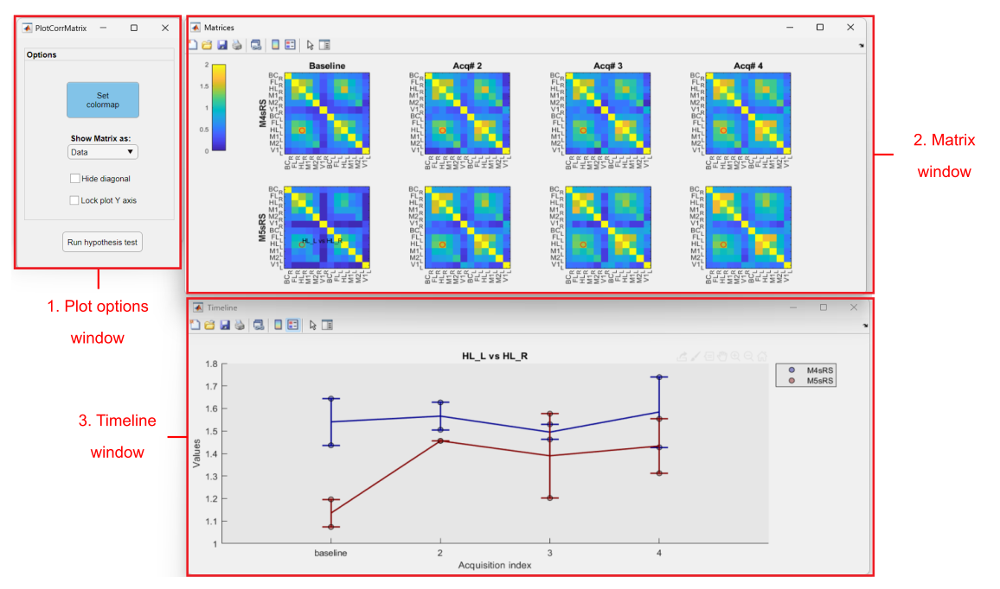

This tool is dedicated to the visualization of correlation matrices of grouped data. In particular, the tool is useful to visualize and compare the correlation matrices between two or more experimental groups in a longitudinal setting (i.e. several acquisitions over time).
Note
This documentation does not cover the steps that precede the usage of the Correlation matrix plot tool.
For more information on how to create the files used in the Analysis tab of umIToolbox as well as on how to separate the data into groups, check the tutorials on how to extract, group and visualize grouped data.
To use the tool, first, select the recordings, files and ROIs to be displayed. Then, launch the tool by clicking Plot Correlation Matrix button in the Apps & tools panel.
This tool accepts only 2D numerical matrices as input. As for longitudinal datasets, all individuals must have the same number of acquisitions.
Once the tool is launched, an average of the correlation matrices is calculated per acquisition per group. The interface is comprised of three windows with: plotting options, correlation matrices separated by group and acquisition and a line plot of the selected correlation.

Main components of the Correlation matrix plot tool. (1) Plot options window: contains several options to reorganize and plot the correlation matrices.(2) Matrix window: figure containing the average correlation matrices separated by group (rows) and acquisition (columns).(3) Timeline window: plot of the selected pair of observations in the matrix (red circle in Matrix window)
The matrix window is comprised of the average correlation matrices separated by group and acquisitions. The groups are shown in each row as the acquisition are shown in columns.
Click on one quadrant of the matrix to upload the plot in the timeline window (3).
This figure shows a scatter plot with the correlation values of individual recordings overlayed with a line plot that shows the group average ± the standard error of the mean (SEM).